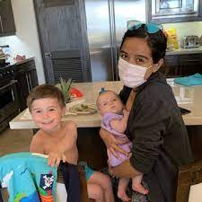
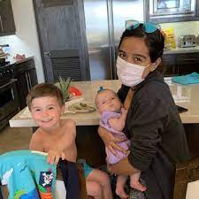
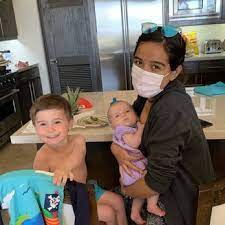

Melanie Gomez
I have always loved to help people and make them feel understood and love to be enthusiastic about my life. Because of that, i decided to starting working at a public amusement park at 16. This park was called "Castle Park." it was a pretty small but well known park to the city and was pretty busy on weekends. My position was a park associate. It taught be a lot from the work industry because it was my first job. I first learned customer service, cashiering, better communication skills, how to handle unsatisfied costumers and being reliable. I would work at the little souvenir stands and carnival games. I learned to up-sale and convince people to buy a certain product. I have practiced those skills over time and could proudly say I am great at them. Although it was just a part-time job, I learned so much and made so many connections that will last forever. They say first jobs play an important role in your life, and for me that is completely true.
During this job, I was a junior and senior in high school and worked around my schedule perfectly. Later, I was offered a job at might high school as an Avid Tutor from my teacher after i graduated. Because he saw how enthusiastic I was for helping people, he thought i would be a great candidate.This was a great opportunity right after high school because it gave me even more experience with working with kids, other teachers and even helping those students who don't know much english. I am fluent in Spanish and lucky to say that i could really help those students that are struggling due of their language barrier. Coming from a family that their first language is Spanish, i do understand how difficult it could be to succeed when the language everything is, is difficult. Anything i could do in my power to help others succeed is what my goal is in this job and will continue to help in anyway possible.
A few things I have volunteered in have been been my public church, babysitting, street cleaning, animal shelter and homeless shelter. For my church, we have been to food banks like feeding America. Caring for our community is very important because I want all of us to be able to have a great clean community and have a safe place to live. A few church members, community helpers, and students have all came out to clean any trash on the streets, roads, parking lot, parks, etc. That has been one of my favorite thing to do next to animal shelter. In the animal shelter, we would feed the dogs and cats, clean them and play with them which always brought a smile to our faces and a happy tail to our pets. During holiday times, we would make nice dinners for those who don't have food or homes. It is always a great feeling helping our communities and those who are in need.
Experience
Avid Tutor
• Teach students and help with homework
• help grade students work
Babysitting
• Helped watch 2 small children
• Cooked for 2 children
• Helped bathe small children
• Helped children with school work
Education
UC Riverside
Portfolio
 


